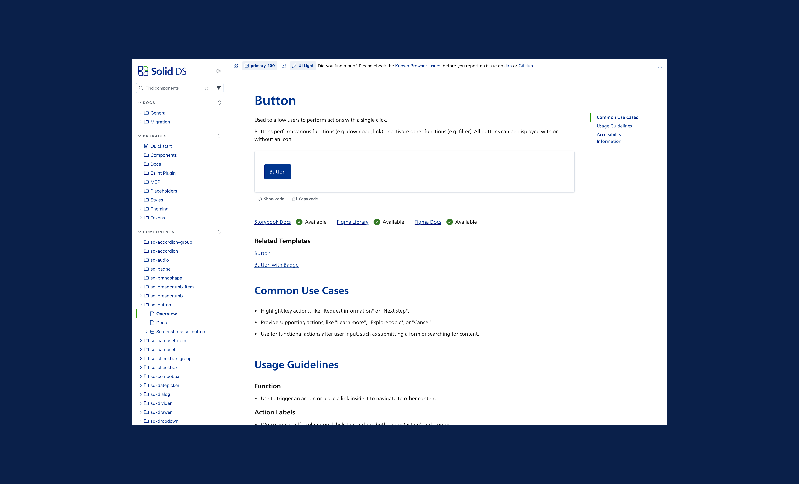
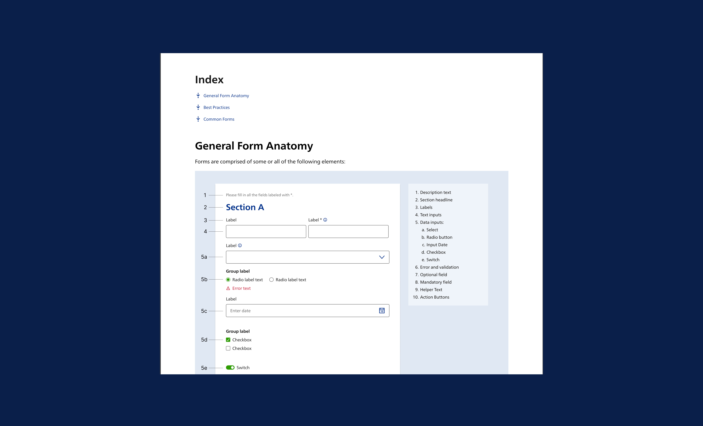
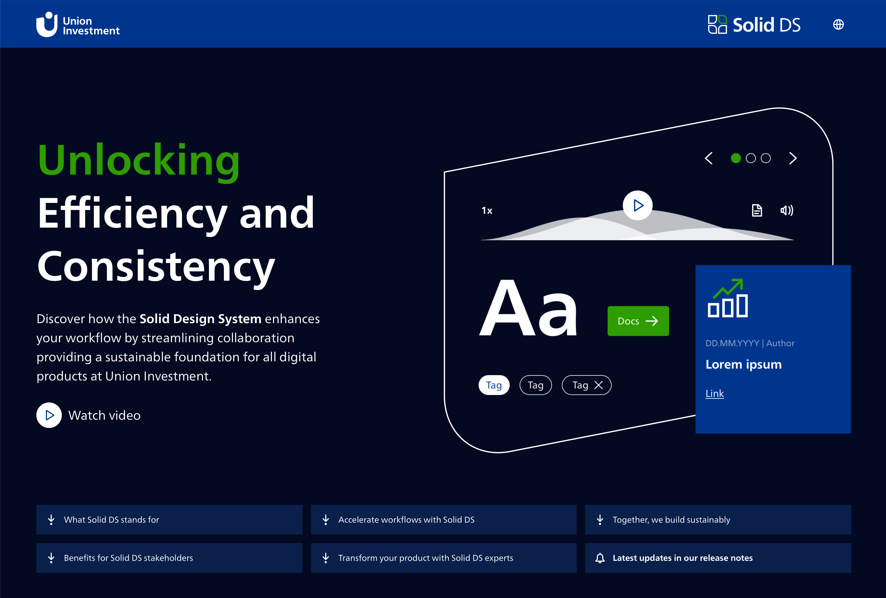

Design system · documentation · sole UX designer
Solid Design System /
documentation, patterns, landing page
The design system of Union Investment, a large German asset manager. When I joined, most components were built but not yet documented for the people designing with them. My work was to define how the system is documented, to research UX patterns shared across the company's products, and to present the system to the teams who had not adopted it yet.
The problem
The Solid Design System is the framework-agnostic component library behind Union Investment's digital products. It is built on design tokens, and components have the same names and properties in Figma and in code. When I joined, most components were already well into development. They were built from the many versions of the same elements that existed across the company's products.
The documentation at that point was written for developers. What was missing was guidance for the people designing with the system, like when to use a component or how to choose between two similar ones. Without it, teams kept building their own solutions, and the same form or search existed in slightly different versions across products.
Approach
01
Understanding the system and its history. It was my first design system of this size, so I started with research. I went through the existing components and compared how other public design systems document theirs. I also audited how the older versions of each component were used in Union Investment's products. This showed me which differences were accidental and which came from real needs that the new system did not cover yet.
02
Asking designers and developers. I ran surveys with both groups about how they used the documentation and where it failed them. I asked about concrete situations where they had lost time, not about what documentation should contain in general, and used the answers to iterate on the structure.
03
A structure and a language for every component. From the research I defined a fixed structure for each component page and a few rules for how it is written.
Use cases before rules
Common use cases come before the guidelines. People usually first need to know if this is the right component at all, and only then how to use it.
Similar components side by side
Where two components are close, like an accordion and an expandable, the guidelines compare them directly. A comparison answers the question faster than two separate pages.
Accessibility on every page
Every component page says what the designer has to take care of and links to the general best practices. That way it comes up while people are making the decision.
Written to be continued
Guidelines are short instructions that start with a verb, and names are the same in Figma and in code. The system had to keep growing after my part ended, so other people needed to write new pages the same way.

↑ Component documentation page in Storybook, the structure I defined
04
Finding middle ground with the client. In the second phase we built a pattern library. The client wanted ready-made blocks that teams could copy into their products and use right away. That is a fair goal, because speed helps a lot with adoption. My concern was that one fixed layout would not fit all the different products, and that teams with other needs would end up changing the blocks in their own way. After a few sessions together we agreed to do both.
Patterns
For each pattern, its anatomy, its logic and best practices, so teams can build their own version and still stay consistent.
Ready-made blocks
Copy-paste blocks for the most common forms: login, password reset, contact and personal information.
The patterns give teams the rules, and the blocks give them a fast start for the cases that look almost the same in every product. Where a block also exists in code, it links to its version in Storybook, so designers and developers start from the same thing.
05
Finding the patterns. I led this work, with support from a colleague. We made an inventory of the products to find where different teams had built the same solution independently. Interviews with stakeholders helped us set priorities and find patterns that were obvious from the inside but not from the outside. We started with forms, search, navigation, first-time use and data visualisation.

↑ Pattern definition, Forms
The Forms pattern shows the kind of decisions a pattern holds. Most of them try to interrupt people as little as possible. Errors are checked when the form is sent, and only simple format errors are checked earlier, after the person has left the field and changed the value. The wording of error messages is part of the pattern too, since the component only provides the space for the message. The rule is to explain how to fix the problem and never blame the person filling in the form.
06
The landing page. The system also needed a public page for the teams who had not adopted it yet. I defined the structure and the content and designed the page, and a visual designer took care of the final visual details. The page is built with the system's own components, so it is also a working example of it.
01
Why before how
The page is for people who have not decided yet, so it starts with what the system gives them and only then explains how to get started.
02
One argument per role
Product owners, designers, developers and brand managers decide about adoption for different reasons, so each of them gets their own benefits and a quote.
03
A team behind it
The page introduces the design system team and what they offer, and links to the latest release notes. For a team that depends on the system, it matters that someone keeps looking after it.
I also gave sustainability its own section. Reusing components means less code to build and to load, and so less energy. It is an argument that also reaches people outside the design and development teams.

↑ The public landing page
What I contributed
Documentation language
A structure other people could keep adding to.
Research
Cross-product audit, surveys, a look at how other systems handle the same problem.
Pattern library
Flexible patterns and ready-made blocks for common forms, agreed together with the client.
Landing page
Showcase ofthe system targeted at teams who hadn't adopted it yet.
Outcome
Shipped
the documentation framework became the standard for everything added afterwards
2024
UX Design Awards nominee
Live
the landing page is public
View the live landing page: solid-design-system.union-investment.de ↗